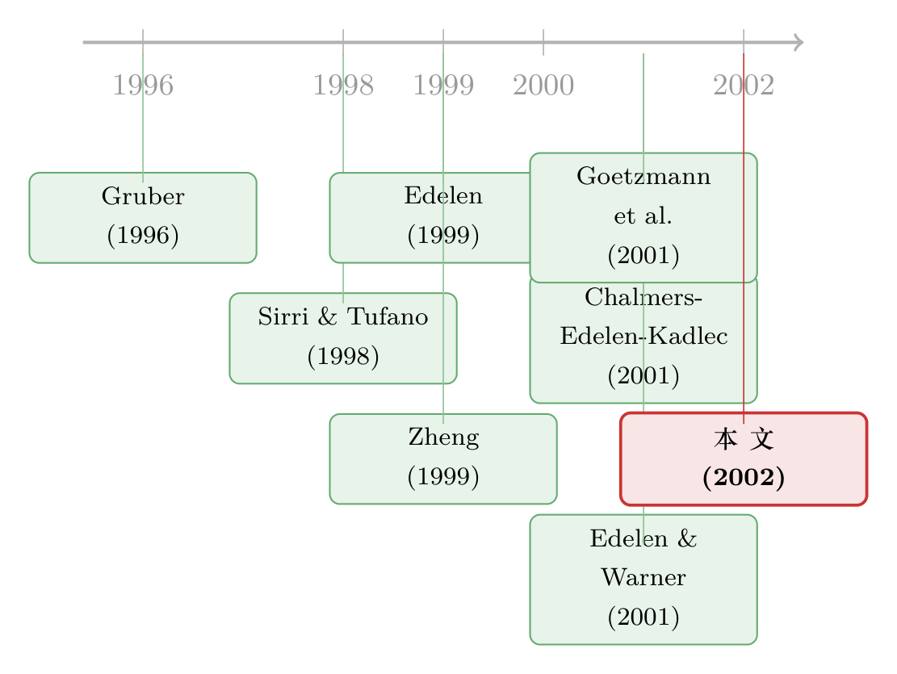

免费的流动性，账单却寄给了「不交易的人」
本文读的是 Greene & Hodges (2002, Journal of Financial Economics)：开放式基金几乎免费、无限地提供申赎流动性，可这份「午餐」并不真免费——那些能预测明日收益的活跃交易者，用现金稀释了基金的风险资产收益，账单落在了不交易的被动持有人头上。在美国本土的国际型基金里，这种稀释每年高达 0.48%（大额流动基金近 1%），26 个月里完成了一笔超过 4.2 亿美元 的财富转移；而国内股票/债券基金平均看不到这种损耗。
1 一份「免费」的午餐，谁在买单？
先说一件几乎所有人都习以为常、却从没细想过的事。
你买一只开放式共同基金 (open-end mutual fund)，今天想进就进，明天想出就出，价格按当日收盘的每股净资产 (net asset value, NAV) 结算，手续往往近乎为零。这是开放式基金最大的卖点——它给你一份近乎免费、近乎无限的流动性 (liquidity)。
但流动性从来不是凭空变出来的。你申购的那笔钱进来，基金要么去市场上买入证券（一笔有成本的交易），要么先搁在现金账户里压着仓位。你赎回的那笔钱出去，基金要么卖资产，要么动用现金垫付。换句话说，活跃的交易者每进出一次，都在给基金施加一点成本。而这点成本，并不会单独记到他头上——它被摊进了整个资金池，最终由那些一动不动、长期持有的被动股东 (passive shareholders) 共同承担。
这就是本文要死磕的那一个核心：daily fund flows 对被动持有人的「稀释」(dilution)。
接着，一个自然的问题是：这种稀释真的大到能被测出来吗？毕竟，如果进出基金的只是一群随机的、需求互相抵消的流动性交易者，那现金一进一出，对长期收益的影响顶多是噪声。真正让稀释变得「有毒」的，是另一种可能——进出基金的钱，能预测基金明天的涨跌。如果是这样，那进来的现金就不是中性的噪声，而是一把精准的镰刀。
2 一个看上去「太简单」的交易规则
要证明稀释有害，得先证明「钱能预测收益」不是空谈。本文的第一步，是先在 ex ante（事前）层面，把一个能赚钱的交易策略摆到桌面上。
故事的根子，在于一个叫陈旧价格 (stale prices) 的东西。
美国本土的国际型基金 (U.S.-based international funds) 持有的，多半是在美国以外市场交易的证券。SEC 规定基金至少每天给组合估一次值，而基金通常就用每只证券在其本土市场的最后成交价。问题来了：当纽约时间下午临近收盘时，东京、伦敦早已收市数小时，这些海外证券的收盘价根本无法反映美国当天交易里释放出来的系统性信息。于是，国际型基金的 NAV 在纽约下午这个时点上是「过期」的。
而大多数开放式基金允许你下午 4:00 之前下单，按当天那个「过期」的 NAV 成交。这就构成了 Chalmers, Edelen, and Kadlec (2001)（下称 CEK）所说的「百搭期权」(wildcard option)——一份对国际型基金频繁实值 (in-the-money) 的期权。
然后，本文给出一个简单到近乎「作弊」的择时规则：
用标普 500 当天的盘前收益做信号。若今天（比如东部时间 3:55）标普 500 是涨的，明天就持有国际型基金；若标普 500 是跌的，明天就持有现金。
逻辑很直白：美国市场和海外市场存在传染效应 (contagion)，美国今天的涨跌会外溢到明天开市的亚欧市场，而国际型基金的 NAV 还没把这部分信息计入。这条规则，等于抢在陈旧价格被更新之前下注。
这条规则有多赚钱？用 1993 到 1997 年、84 只国际型基金的日度 NAV 数据：买入持有 (buy-and-hold) 的年均收益是 13.33%，同期标普 500 是 18.4%；而这条择时策略的年均收益高达 34.24%，平均成功率 63.33%（买入持有市场指数的「成功率」约 52%）。整个策略 5 年里只需要 595 笔交易，平均每个仓位（现金或基金）持有 2.12 天。
为了确认这不是「承担了更多风险换来的」，本文跑了一个二次型的市场择时回归（Treynor–Mazuy 形式）：
$$R_{p,t} = \alpha + \beta R_{M,t} + \gamma R_{M,t}^2 + \varepsilon_t$$
结果很说明问题：择时策略的截距 \(\alpha\)（即 alpha）为 0.0013（t = 9.60），显著为正；二次项系数为 11.32（t = 10.65），说明它确实有择时能力；而它的市场暴露 \(\beta\) 只有 0.3282，约为买入持有（0.7040）的一半——这跟「策略有近一半时间持有现金」完全吻合。更高的收益，更低的 beta，外加显著为正的择时项：这是一份近乎免费的午餐。
一个有意思的旁支：你可能以为用 iShares（当年叫 WEBS，能反映美国交易时段内的国际市场实时报价）当信号会更准。结果恰恰相反——标普 500 信号的策略收益 41.26%，反而高于 iShares 信号的 29.65%。本文猜测，是 iShares 自己交易太不活跃、价格也没完全盯住美国市场所致。
3 从「能赚钱」到「真有人在赚」
到这里，前人（CEK、Goetzmann et al. 2001、Bhargava & Dubofsky 2001）其实都已经论证过：这种策略理论上可行。
但真正关键的一步在于——本文是第一篇去问：交易者真的在用这套策略吗？他们的净流动又如何冲击了基金收益？ 前人停在「机会存在」，本文要往前走到「机会被人吃掉了，而且代价由别人付」。
数据换成了 TrimTabs 提供的日度基金数据，区间 1998-02-02 到 2000-03-31，经过严格清洗后剩 433,670 个日度观测、833 只基金（按招股书目标分成债券 309、成长 204、股票 211、国际 109 四类，约占全美开放式基金资产的 20%）。
第一个证据，是流动的「体量」。日度净流动的绝对值（衡量净交易活跃度）：全样本平均 0.43%，债券 0.31%、成长 0.45%、股票 0.34%，而国际型基金高达 0.91%——按一年 250 个交易日算，国际型基金的年换手率约 225%，是其他股票类（不足 100%）的两倍多。国际型基金，明显是被「翻动」得最频繁的那一类。
第二个、也是更要命的证据，是流动的「方向」对不对。本文先确认这些基金确实是择时的好标的：标普 500 当天收益与基金次日收益的相关系数，国际型基金平均 0.3492，远高于其他类别的 0.1000，而且 109 只国际型基金里 100% 都是正相关。这正是陈旧价格留下的指纹。
然后是临门一脚：今天的资金流方向，和明天的基金收益方向，对不对得上？国际型基金的这个相关度是 0.0689（显著），全样本只有 0.0192。钱不是随机进出的——它精准地在「明天会涨」的前夜涌入。 这就是活跃择时者的脚印。
这里藏着本文与 Goetzmann, Ivkovich, and Rouwenhorst (2001) 冲突的关键。TrimTabs 拿到的多数是「盘前」净资产数据（不含当天流动），本文据此判断哪些基金的流动其实滞后了一天，并把日期回拨一天再做匹配。正是这个看似琐碎的对齐，决定了「流动到底预测了收益，还是只是被收益带着走」。
4 钱，是怎么被「稀释」掉的
现在可以正面回答那个核心机制了。
把基金想象成一个资金池：活跃交易者投进来的现金，和池子里既有的风险资产搅在一起。一旦「进了池子」，这个交易者拿到的就是池子的共同收益 (pooled return)——和任何一位老股东一模一样。
于是反转出现：一个能准确预测明日风险资产收益的交易者，用现金「蹭」进了一个即将上涨的池子，却又不必为这部分上涨付出任何持仓成本。他在好日子前夜涌入、坏日子前夜撤离，结果就是——他用现金稀释了那些短命的正收益，又把负收益更浓地留给了别人。被动股东本该独享的涨幅被摊薄，本该被分散的跌幅被浓缩。
这也解释了为什么稀释「最可能」来自短期（如日度）流动：长期流动的钱，基金有的是时间把它投成风险资产、从而真正赚到长期收益；而日度的现金来去匆匆，往往只是在 NAV 的资产组合里短暂地「占个空位」，却恰好占在了最关键的那一天。
要量出这件事，第一块积木是把每天的净流动 (net fund flow) 从「资产规模的变化」里干净地剥出来。TrimTabs 的算法是：
直觉是：把昨天的资产按今天的净值收益「滚」一遍，得到的是纯收益带来的规模；真实规模与它的差额 \(c_t\)，才是当天净进出的「新钱」。这个口径只有在总净资产是「盘后」(post-flow) 口径时才准确——这正是本文要费力区分流动是否滞后一天的原因（GAAP 报表是盘后口径，可基金报给 TrimTabs 的常是盘前口径）。
有了干净的 \(c_t\)，稀释的逻辑就清楚了：比较被动持有人实际拿到的池子收益，和假如没有这些择时现金扰动他们本该拿到的收益，两者之差，就是被择时者「拿走」的那一块。
5 结果：0.48% 的损耗，与 4.2 亿美元的暗中易手
把这套测量推到全样本，结论干净利落，也带着张力：
- 国内股票、债券基金：平均看不到稀释。 它们的资金流跟次日收益基本无关（陈旧价格问题轻微），择时无利可图，自然也就谈不上系统性地损害被动股东。
- 国际型基金：每年
0.48%的负向稀释。 对那些日度流动特别大的子样本，这个数字接近1%。 - 一笔被动到主动的财富转移。 在仅占全美开放式基金约
20%资产的样本里，本文估计 26 个月内，国际型基金的被动股东向活跃交易者净转移了超过4.2 亿美元的财富。
0.48% 听起来不大，但请记住：这是被动持有人什么都没做、纯粹因为「和别人共用一个池子、用了一套过期的价格」就凭空蒸发掉的收益；而且它逐年复利，规模可观。
这把矛头最终指向了一个治理层面的结论：基金的换汇政策与定价政策（如何估值、几点截单、是否公平价值调整），本身就具有实打实的业绩含义。换句话说，这不是市场风险，而是制度设计留下的一道口子。
（关于「过期/算不准的净值」如何同时是漏洞、又可能是减震器，可参见《加息前夜的悄然撤离：当「算不准的净值」反而成了基金的减震器》；而基金底层资产难以脱手如何向净值传导脆弱性，可参见《基金越难脱手，它手里的债券越「抖」》。）
6 文献脉络
这条线索，是几股研究汇到一处的产物。
最早是关于「钱往哪儿流」的研究。Gruber (1996) 与 Zheng (1999) 发现了「聪明钱」(smart money) 效应——长期资金流倾向于找到那些未来表现更好的基金；Sirri and Tufano (1998) 则刻画了净新资金如何被过往业绩、申购费、管理费所左右。但这些讲的都是较长期的流动。本文的一个反差是：日度流动呈现出与长期流动相当不同的图景（比如它对国际型基金的次日收益有预测力，而国内基金没有）。
第二股，是「流动会损害业绩」这条线。Edelen (1999) 用月度流动和半年度交易数据，论证了流动性驱动的交易会通过费用和交易成本侵蚀被动投资者的收益。本文与 Edelen 同源，但把镜头切到了日度、短命、几乎不引发管理人交易的那种流动——这种流动未必产生交易成本，却能通过稀释伤人。
第三股，是「陈旧价格 → 套利机会」这条线。CEK (Chalmers, Edelen, and Kadlec, 2001) 提出 wildcard option，估出 10–20% 的年化套利空间；Goetzmann, Ivkovich, and Rouwenhorst (2001) 与 Bhargava and Dubofsky (2001) 则在国际型基金里证明了择时可行（更早还有 Copeland and Copeland (1998) 在外汇期货上的发现）。

本文站在这三股的交汇点上，并往前推了决定性的一步：前人证明了「机会存在」，而本文用 TrimTabs 的日度数据证明了「机会确实被人吃掉了」，并第一次量出了被动股东为此付出的代价。它也与 Edelen and Warner (2001)（同样用 TrimTabs 数据、关注日度流动与整体市场收益）形成对照——后者问流动如何影响大盘，本文问流动如何稀释单只基金。
7 评论与延伸（Q&A + 研究方向）
(a) 几个可能的疑问
Q：这和 CEK 那篇「wildcard option」到底有什么区别？
CEK 论证的是机会的存在与大小（陈旧价格制造了一份频繁实值的期权，年化空间 10–20%）。本文论证的是机会被实际利用了（资金流方向与次日收益对得上），以及由此对被动持有人造成的稀释代价（年化 0.48%）。一个讲「可以套」，一个讲「真在套、而且谁在流血」。
Q：0.48% 会不会只是噪声，或者被距离效应、风格差异污染了？
关键的支撑不在这个单一数字，而在三层证据链彼此咬合：国际型基金的标普 500–次日收益相关度高达 0.3492（陈旧价格存在）、资金流方向与次日收益相关（有人在用）、且这一切在国内基金里都消失（安慰剂式对照）。三者同时成立，才让稀释的因果解释站得住。
Q：为什么国内股票/债券基金没有稀释？
因为它们的底层资产在美国本土同步交易，收盘价不「过期」，资金流与次日收益基本无关（相关度仅约 0.10）。没有可预测性，择时无利可图，也就没有系统性的稀释。这反过来印证了机制：稀释的根源是陈旧价格，而非「流动」本身。
Q：那个「把流动日期回拨一天」的处理，会不会是在数据上做手脚、制造出预测性？
这恰恰是本文与 Goetzmann et al. (2001) 分歧的核心，也是最该被审视的地方。本文的依据是：TrimTabs 多数收到的是盘前净资产，而 GAAP 报表要求盘后口径，二者对账后才判断某只基金是否滞后。这是一个有外部基准（GAAP）支撑的对齐，而非任意调参——但它确实是结论的「阿喀琉斯之踵」，值得复核。
Q：既然套利空间这么大，为什么没被竞争抹平？
样本期是 1998–2000，公平价值定价 (fair value pricing) 与短线交易限制尚未普及。本文的政策含义正在于此：基金的定价与换汇政策能直接决定这道口子开多大。事实上，2003 年的「late trading / market timing」丑闻之后，监管与行业的应对（公平价值调整、赎回费、截单纪律）很大程度上就是在堵这个洞。
Q：被动股东损失 0.48%，活跃交易者就净赚 0.48% 吗？
不完全是零和。被动股东的损失（稀释）是一回事，活跃交易者的净得（择时毛收益约 34%/年，减去其占用的现金机会成本与任何摩擦）是另一回事；中间还夹着基金因应对流动而产生的其他直接/间接成本（处理费、被迫抬高的现金头寸、交易成本）。本文的 4.2 亿美元是「财富转移」口径的估计，提醒我们这是一笔可观的、真实的再分配。
(b) 几个可能的研究问题与提案
1. 把同一套「陈旧价格 → 稀释」逻辑搬到公司债基金。
【经济故事】公司债（尤其高收益、新兴市场债）日内交易稀疏，收盘估值常依赖矩阵定价或交易商报价，天然「陈旧」。若资金流能预测这类基金的次日 NAV 修正，被动持有人同样会被稀释——而这正是危机时「先赎为敬」脆弱性的微观根源之一。 【可行性】中。TRACE 提供债券成交价、CRSP/Morningstar 提供基金日度流动与 NAV，识别可沿用本文的「流动方向 vs 次日收益」框架，并用同发行人 ETF/CDS 价格构造「真实价值」基准。难点在债券估值本身的噪声。
2. 外资持有人是不是更系统化的「陈旧价格套利者」？
【经济故事】跨时区、跨市场的外资机构，对美国信号与本地陈旧价格之间的错位最敏感，也最有能力规模化执行。若能把基金（或单券）的持有人按地域拆开，或许能看到稀释代价主要由本地被动散户承担、收益主要被跨境主动资金攫取。 【可行性】中到低。需要持有人层面的地域数据（如 13F + 跨境持仓、或某些托管行数据），与 NAV 陈旧度匹配。数据可得性是主要瓶颈。
3. 公平价值定价改革当作一次准自然实验。
【经济故事】2003–2004 年丑闻后，基金陆续引入公平价值调整与赎回费。把改革当作冲击，用双重差分 (difference-in-differences, DiD) 比较「改革前后、受影响 vs 不受影响基金」的稀释幅度，可直接检验「定价政策决定稀释」这一核心命题。 【可行性】高。改革时点与基金层面的政策采纳可考，本文的稀释测度可直接复用作结果变量。识别的关键是采纳时点的内生性，可用交错 DiD 的稳健估计量处理。
4. 稀释与「脆弱性」的桥接：稀释大的基金，是否在压力期更易遭遇赎回踩踏？
【经济故事】稀释意味着先赎回者占便宜、留守者吃亏，这正是赎回的策略互补性 (strategic complementarity) 的温床。可检验：陈旧价格越严重、稀释越大的基金，在市场骤跌时的赎回–收益螺旋是否更陡。 【可行性】中。需要高频流动数据与压力事件窗口（如 2008、2020-03），结果变量可借鉴流动性/脆弱性文献。
我的判断
本文最大的贡献，是把一条「人人都知道理论上能套利」的旧闻，钉成了「真有人在套、而且代价有名有姓」的实证证据，并第一次给出了被动股东损失的可信量级与总规模。它把抽象的 wildcard option，翻译成了一笔 4.2 亿美元的、看得见的财富再分配，并干净利落地用「国内基金无稀释」做了对照。这是一篇问题清晰、证据链咬合、政策含义直接的好文章。
对识别，我最大的担忧仍落在那个「流动日期回拨一天」的处理上——它既是本文超越 Goetzmann et al. (2001) 的关键，也是结论最脆弱的支点。整篇文章「钱能预测收益」的因果方向，相当程度上系于这个对齐是否准确无偏；尽管有 GAAP 对账作锚，我仍希望看到对这一处理更细的稳健性披露（例如在确知盘后口径的子样本上单独估计稀释）。
后续我最想看到的，是把这套测度搬到信用债基金与危机期：在底层资产同样「陈旧」、却又系统重要得多的市场里，这种稀释会不会从一笔温和的年化损耗，放大成压力期里点燃赎回踩踏的那根引线。
参考文献
- Bhargava, R., Dubofsky, D. (2001). A note on fair value pricing of mutual funds. Journal of Banking and Finance 25, 339–354.
- Bhargava, R., Bose, A., Dubofsky, D. (1998). Exploiting international stock market correlations with open-end international mutual funds. Journal of Business Finance and Accounting 25, 765–773.
- Chalmers, J., Edelen, R., Kadlec, G. (2001). On the perils of security pricing by financial intermediaries: the wildcard option in transacting mutual-fund shares. Journal of Finance, forthcoming.
- Copeland, M., Copeland, T. (1998). Leads, lags, and trading in global markets. Financial Analysts Journal 54, 70–80.
- Edelen, R. (1999). Investor flows and the assessed performance of open-end mutual funds. Journal of Financial Economics 53, 439–466.
- Edelen, R., Warner, J. (2001). Aggregate price effects of institutional trading: a study of mutual fund flow and market returns. Journal of Financial Economics 59, 195–220.
- Goetzmann, W., Ivkovich, Z., Rouwenhorst, K. (2001). Day trading international mutual funds: evidence and policy solutions. Journal of Financial and Quantitative Analysis 36, 287–309.
- Greene, J., Hodges, C. (2001). Market timing, expected returns, and portfolio performance. Advances in Investment Analysis and Portfolio Management 8, 183–204.
- Greene, J. T., Hodges, C. W. (2002). The dilution impact of daily fund flows on open-end mutual funds. Journal of Financial Economics 65(1), 131–158.
- Gruber, M. (1996). Another puzzle: the growth of actively managed mutual funds. Journal of Finance 51, 783–810.
- Sirri, E., Tufano, P. (1998). Costly search and mutual fund flows. Journal of Finance 53, 1589–1622.
- Zheng, L. (1999). Is money smart? A study of mutual fund investors' selection ability. Journal of Finance 54, 901–933.